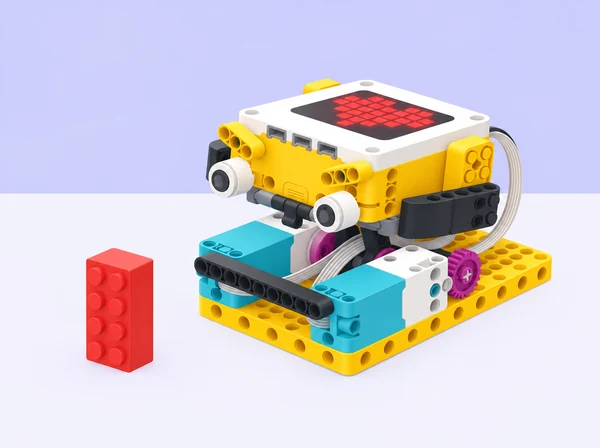

SPIKE Prime: calcular una parada sense tocar l’obstacle
Ajustar el recorregut d’una base motriu amb girs de roda i comparar el càlcul amb una parada per contacte.

🎯 Objectius d’aprenentatge
- Relacionar els girs de les rodes amb la distància que recorre la base.
- Fer una estimació, provar-la i ajustar-la amb dades.
- Distingir una parada calculada d’una parada activada per contacte.
📦 Material necessari
- Conjunt LEGO Education SPIKE Prime amb hub, dos motors i sensor de força.
- Peces Technic per muntar una base motriu estable.
- Un bloc LEGO vertical com a obstacle i cinta de paper per marcar la sortida.
- Regle o cinta mètrica.
👣 Passos de la pràctica
1. Preparar el recorregut
Construeix una base que avance recta amb dos motors connectats als ports que indique el programa. Situa el bloc a un metre de la línia d’eixida i comprova, amb el robot apagat, que l’espai de prova està lliure.
2. Estimar abans de programar
Mesura el diàmetre de la roda. Calcula aproximadament la distància d’una volta (π × diàmetre) i estima quantes voltes fan falta perquè el robot s’ature abans del bloc. En SPIKE App, usa el bloc de moviment per voltes o graus; els noms poden variar segons la versió de l’aplicació.
3. Fer una prova lenta
Programa l’avanç a velocitat baixa i executa’l des de la marca. Mesura la separació final entre el davant de la base i el bloc. Anota voltes programades, distància real i separació; modifica només una variable en cada prova.
💡 Repte d’equip: aconseguiu quedar-vos tan a prop com pugueu sense tocar el bloc. Quan funcione a un metre, canvieu la distància d’eixida i reutilitzeu les dades per fer una nova predicció.
4. Comparar amb una parada per contacte
Si el muntatge incorpora un sensor de força al davant, afegiu-lo com a topall tou contra una paret feta amb blocs. Programeu el moviment perquè s’ature quan el sensor detecte el contacte. Feu aquesta comparació a velocitat baixa i amb un obstacle estable; el sensor de força no és un sensor de distància i aquesta segona prova sí que acaba en contacte.
🧠 Què observem?
El nombre de voltes dona una parada anticipada que es pot calcular, però depén de les rodes, la velocitat, el muntatge i el lliscament. El sensor de força detecta el contacte i pot fer d’interruptor de seguretat per al repte, però no serveix per mesurar l’espai que queda abans de l’impacte.
Preguntes per a la parella
- Quantes voltes havíeu previst i quantes n’han calgut després de provar?
- Què ha canviat quan heu modificat la velocitat?
- En quin cas el robot s’atura abans del contacte i en quin cas espera a tocar?
♿ Suport i extensió
Per començar, facilita una taula de conversions roda-voltes-distància o una distància que corresponga a voltes completes. Com a extensió, compareu rodes de diàmetres diferents o representeu les proves en un gràfic. Repartiu els rols: conducció, mesura i registre.
✅ Evidències
Recolliu una taula amb les prediccions i resultats, una explicació de l’ajust triat i una demostració de cada tipus de parada. Eviteu fotografiar cares o dades personals.
🔎 Inspiració i límits de l’adaptació
Adaptació pròpia del repte Going the Distance de LEGO Education, que proposa calcular el recorregut d’un Rhino i comparar-lo després amb una parada per sensor de força. Ací canviem el context i el registre de proves; consulta la lliçó oficial per a les instruccions específiques del model.